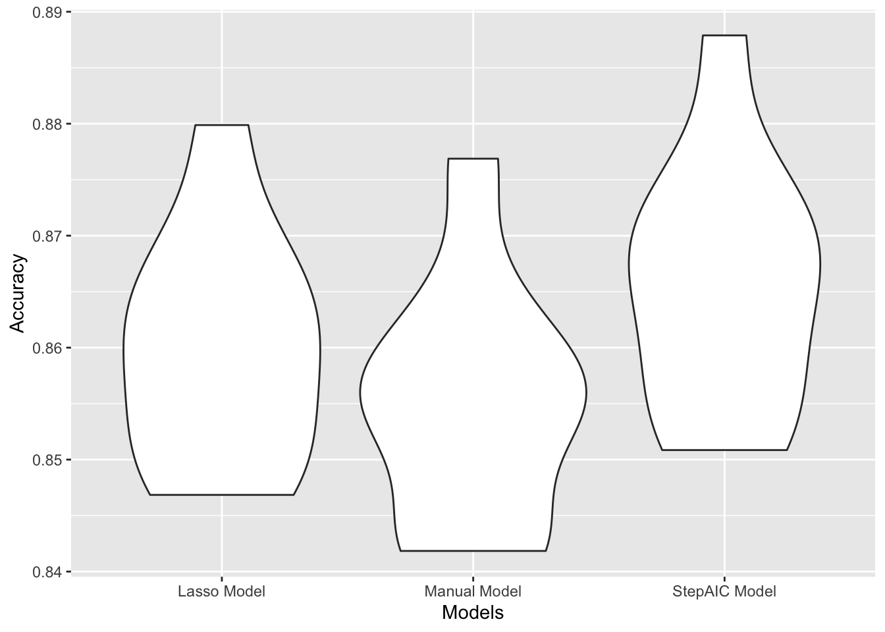

To select for the best model that can predict whether the kid vaped or not based on self reported status that they are willing to share, we rewrite our model selection method as function that can be mapped top a modelr cv object by purrr to streamline the crossvalidation proscess.
## function for stepAIC method
log_reg_auto = function(cv_df){
cv_df %>%mutate(
###Automodel selection with AIC as criterial
automodel = map(train, ~glm(current_vaping ~., data = .x, family = binomial(),na.action = na.exclude)%>%MASS::stepAIC(trace = FALSE))
) }
###function for lasso selection method
lasso = function(df){
lasso_temp = cv.glmnet(current_vaping ~., data = df, family = "binomial")
glmnet(current_vaping ~., data = df, family = "binomial",lambda = lasso_temp$lambda.min)
}
### formular for manual selection
manual_formular = current_vaping ~ sad_hopeless + attempted_suicide + safety_concerns_at_school +
threatened_at_school + physical_fighting + bullying_electronically +
carring_weapon
###find prediction accuracy
accy = function(model,data){
Temp = predict(model, data, type = "response")%>%round()
1-mean(Temp-(as.numeric(pull(as.tibble(data),current_vaping))-1))
}cv_df =
## Making the CV_df by modelr, for 5 folds and 10 times.
crossv_mc(df15,n=10)The cv_df will be feeds to all three models and then the accuracy of prediction of each on the test dataset will compute and graphically displayed.
cv_df = cv_df %>%
##stepAIC
log_reg_auto() %>%
## Manual model
mutate(manual_model = map(train, ~glm(manual_formular, data = .x, family = binomial,na.action = na.exclude)))%>%
## Lasso model
mutate(lasso_model = map(train,~lasso(.x)))## Warning in (function (formula, data, weights = NULL, offset = NULL, subset
## = NULL, : input data was converted to data.frame## Warning in (function (formula, data, weights = NULL, offset = NULL, subset
## = NULL, : input data was converted to data.frame## Warning in (function (formula, data, weights = NULL, offset = NULL, subset
## = NULL, : input data was converted to data.frame## Warning in (function (formula, data, weights = NULL, offset = NULL, subset
## = NULL, : input data was converted to data.frame## Warning in (function (formula, data, weights = NULL, offset = NULL, subset
## = NULL, : input data was converted to data.frame## Warning in (function (formula, data, weights = NULL, offset = NULL, subset
## = NULL, : input data was converted to data.frame## Warning in (function (formula, data, weights = NULL, offset = NULL, subset
## = NULL, : input data was converted to data.frame## Warning in (function (formula, data, weights = NULL, offset = NULL, subset
## = NULL, : input data was converted to data.frame## Warning in (function (formula, data, weights = NULL, offset = NULL, subset
## = NULL, : input data was converted to data.frame## Warning in (function (formula, data, weights = NULL, offset = NULL, subset
## = NULL, : input data was converted to data.frame## Warning in (function (formula, data, weights = NULL, offset = NULL, subset
## = NULL, : input data was converted to data.frame## Warning in (function (formula, data, weights = NULL, offset = NULL, subset
## = NULL, : input data was converted to data.frame## Warning in (function (formula, data, weights = NULL, offset = NULL, subset
## = NULL, : input data was converted to data.frame## Warning in (function (formula, data, weights = NULL, offset = NULL, subset
## = NULL, : input data was converted to data.frame## Warning in (function (formula, data, weights = NULL, offset = NULL, subset
## = NULL, : input data was converted to data.frame## Warning in (function (formula, data, weights = NULL, offset = NULL, subset
## = NULL, : input data was converted to data.frame## Warning in (function (formula, data, weights = NULL, offset = NULL, subset
## = NULL, : input data was converted to data.frame## Warning in (function (formula, data, weights = NULL, offset = NULL, subset
## = NULL, : input data was converted to data.frame## Warning in (function (formula, data, weights = NULL, offset = NULL, subset
## = NULL, : input data was converted to data.frame## Warning in (function (formula, data, weights = NULL, offset = NULL, subset
## = NULL, : input data was converted to data.frame###Prediction Accuracy computation
cv_df = cv_df %>%
mutate(
accuracy_automodel= map2_dbl(.x = automodel,.y = test, ~accy(data =.y,model =.x)),
accuracy_manualmodel= map2_dbl(.x = manual_model,.y = test, ~accy(data =.y,model =.x)),
accuracy_lasso= map2_dbl(.x = lasso_model,.y = test, ~accy(data =.y,model =.x))
)## Warning in (function (formula, data, weights = NULL, offset = NULL, subset
## = NULL, : input data was converted to data.frame## Warning in (function (formula, data, weights = NULL, offset = NULL, subset
## = NULL, : input data was converted to data.frame
## Warning in (function (formula, data, weights = NULL, offset = NULL, subset
## = NULL, : input data was converted to data.frame
## Warning in (function (formula, data, weights = NULL, offset = NULL, subset
## = NULL, : input data was converted to data.frame
## Warning in (function (formula, data, weights = NULL, offset = NULL, subset
## = NULL, : input data was converted to data.frame
## Warning in (function (formula, data, weights = NULL, offset = NULL, subset
## = NULL, : input data was converted to data.frame
## Warning in (function (formula, data, weights = NULL, offset = NULL, subset
## = NULL, : input data was converted to data.frame
## Warning in (function (formula, data, weights = NULL, offset = NULL, subset
## = NULL, : input data was converted to data.frame
## Warning in (function (formula, data, weights = NULL, offset = NULL, subset
## = NULL, : input data was converted to data.frame
## Warning in (function (formula, data, weights = NULL, offset = NULL, subset
## = NULL, : input data was converted to data.frame###Graph accuracy distribution
cv_df %>% select(starts_with("accuracy")) %>%
pivot_longer(
everything(),
names_to = "model",
values_to = "Accuracy",
names_prefix = "accuracy_") %>%
mutate(Models = recode(model,automodel = "StepAIC Model",manualmodel = "Manual Model", lasso = "Lasso Model")) %>%
ggplot(aes(x = Models, y = Accuracy)) + geom_violin()
## The model generated using the full data set is recreated
Final_model =
## tibble
tibble(train = list(df15),
test = list(df17)) %>%
##stepAIC
log_reg_auto() %>%
## Manual model
mutate(manualmodel = map(train, ~glm(manual_formular, data = .x, family = binomial,na.action = na.exclude))) %>%
## Lasso model
mutate(lassomodel = map(train,~lasso(.x)))It occurs that the accuracy of the models generated by stepAIC are the best among the three models, also with a slightly better consistancy.In terms of number of predictors, the stepAIC model have 10 less predictors than the lasso one.Therefore the stepAIC model will be the model of our choosing.
Final_model %>%
mutate(
accuracy_automodel= map2_dbl(.x = automodel,.y = test, ~accy(data =.y,model =.x)),
accuracy_manualmodel= map2_dbl(.x = manualmodel,.y = test, ~accy(data =.y,model =.x)),
accuracy_lasso= map2_dbl(.x = lassomodel,.y = test, ~accy(data =.y,model =.x))
) %>%
select("Accuracy StepAIC Model"=accuracy_automodel, "Accuracy Manual Model" = accuracy_manualmodel, "Accuracy Lasso Model"= accuracy_lasso)%>%round(digits = 3) %>% knitr::kable(caption = "Prediction Accuray by Model on 2017 data")| Accuracy StepAIC Model | Accuracy Manual Model | Accuracy Lasso Model |
|---|---|---|
| 0.873 | 0.863 | 0.866 |
Consequntaily, the model of our choosing also turns out to give the most accurate prediction of the the vaping status for kids in 2017. The parameters of each predictos and the P value associated with it are shown as follow:
Final_model[[1,3]] %>% broom::tidy() %>% knitr::kable()| term | estimate | std.error | statistic | p.value |
|---|---|---|---|---|
| (Intercept) | -2.9432403 | 0.6046158 | -4.8679514 | 0.0000011 |
| sexmale | 0.3377825 | 0.0909584 | 3.7135930 | 0.0002043 |
| race7Asian | 0.7788399 | 0.3356866 | 2.3201403 | 0.0203333 |
| race7Black or African American | 0.9757567 | 0.3231658 | 3.0193685 | 0.0025330 |
| race7Hispanic/Latino | 0.1922447 | 0.3106394 | 0.6188676 | 0.5360036 |
| race7Multiple Races (Non-Hispanic) | 0.5017120 | 0.3793141 | 1.3226821 | 0.1859411 |
| race7Native Hawaiian/Other Pacific Islander | 0.1785621 | 0.4438397 | 0.4023123 | 0.6874542 |
| race7White | -0.2106758 | 0.3191358 | -0.6601447 | 0.5091610 |
| sad_hopelessNo | 0.4283129 | 0.0910190 | 4.7057542 | 0.0000025 |
| attempted_suicideNo | 0.5886823 | 0.1440285 | 4.0872612 | 0.0000436 |
| safety_concerns_at_schoolNo | 0.2988078 | 0.1830683 | 1.6322209 | 0.1026330 |
| physical_fightingNo | 0.7660082 | 0.0993296 | 7.7117850 | 0.0000000 |
| illegal_injected_drug_useNo | 0.9335128 | 0.4870586 | 1.9166333 | 0.0552845 |
| carring_weaponNo | 0.6312043 | 0.1472242 | 4.2873684 | 0.0000181 |
| sex_before_13No/No sex yet | 0.4253948 | 0.1961925 | 2.1682522 | 0.0301395 |
| current_sexual_activitynever sex/no sex during past 3 month | 0.8159507 | 0.0942926 | 8.6533953 | 0.0000000 |
Final_model[[1,3]]$formula## current_vaping ~ sex + race7 + sad_hopeless + attempted_suicide +
## safety_concerns_at_school + physical_fighting + illegal_injected_drug_use +
## carring_weapon + sex_before_13 + current_sexual_activity
## <environment: 0x7fc4f57bbef8>Final_model## # A tibble: 1 x 5
## train test automodel manualmodel lassomodel
## <list> <list> <list> <list> <list>
## 1 <tibble [4,992 × 19… <tibble [5,541 × 1… <glm> <glm> <glmnt.fr>